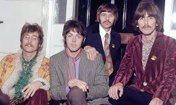
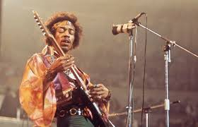
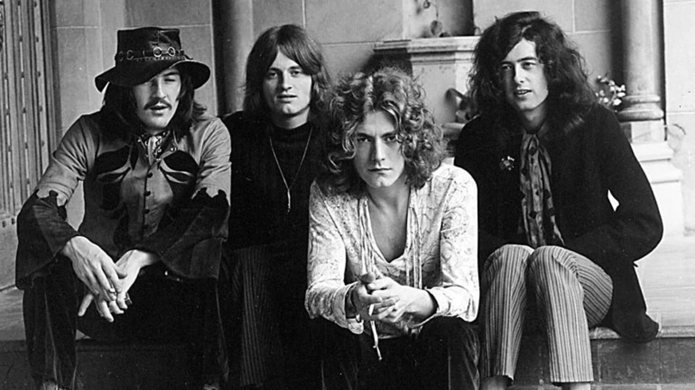
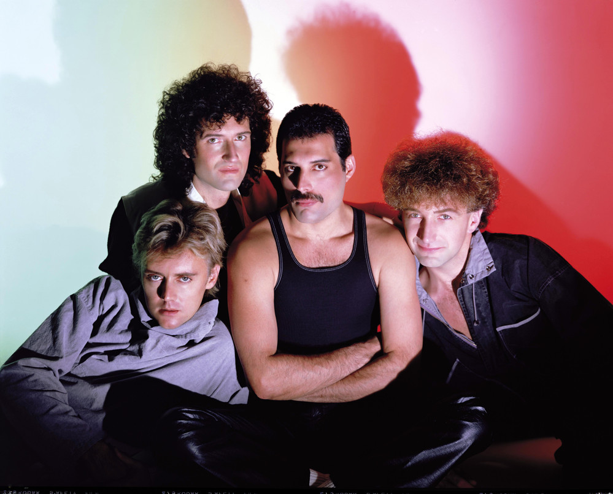

| 50-60 | 70-80 | 90-2000 | Subgêneros |
|---|
O rock and roll surgiu nos Estados Unidos de 1950, com raízes no blues, rhythm and blues e country music.
Nos anos 50 e 60, o rock passou por diversas mudanças e evoluções


Nos anos 70 e 80, o rock se tornou mais diversificado e experimental


Nos anos 90 e 200 o rock continuou a se diversificar e novos subgêneros surgiram

O rock continua a ser um gênero popular e influente na música.
Saiba mais sobre a História do rock na Wikipédia!